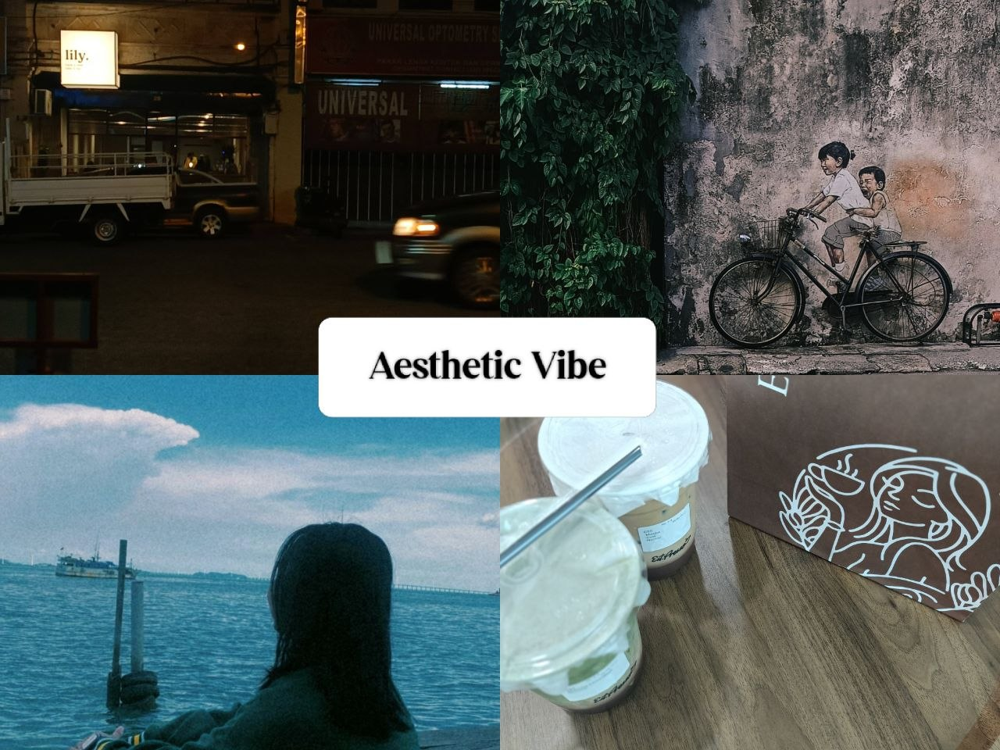
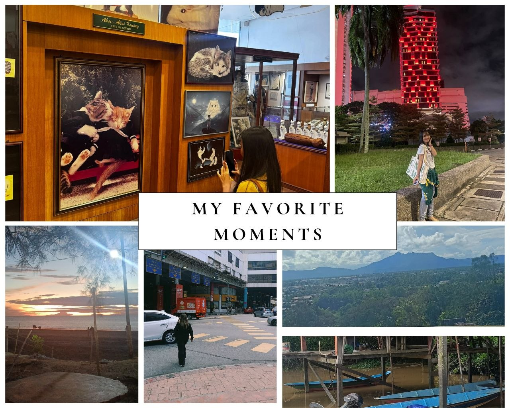
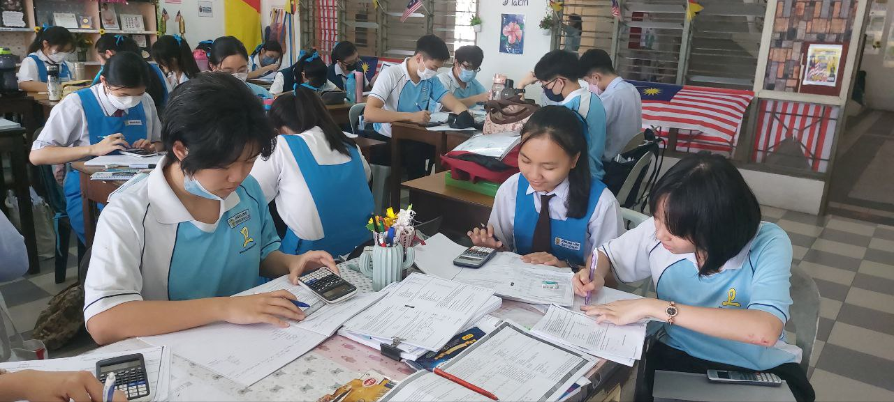
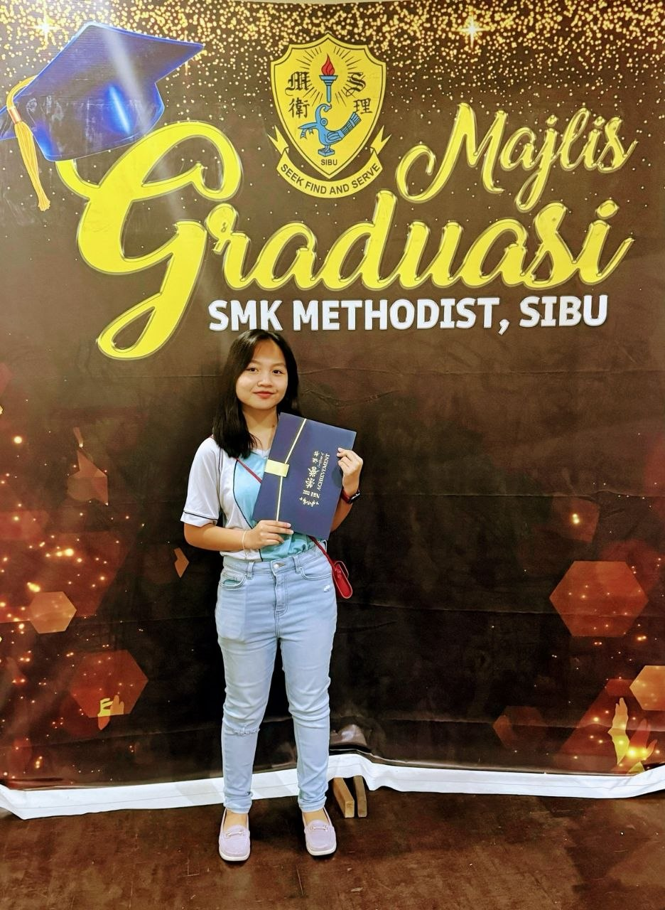

Aesthetic Vibes

These are some of my favourite photos of mine that gives the aesthetic girl vibes.

These are some of my favourite moments that I capture during my vacation and hometown visit.
I am really interested in taking pictures of the environment that I see everytime I go somewhere.
Highschool Memories!!

Last day of class and its our final year.
5 Yakin will always be the class that I cherish especially with all the moments we spent for 2 years as classmates. I miss them.

I still remember that I was struggling in Accounting subject that causes my accounting teacher decided to form a study group with her.I was a little embarrased that time but still I'm grateful on how persevere my accounting teacher in lecturing us this subject during our study group. Thanks to her I was able to pass Account with flying colours. Thank you teacher!!

Last day of science class before SPM!!Yeah, we did our best in science papers.
I miss doing experiments during science class.

Yeah, finally graduated from highschool!!
5 years in highschool were filled with challenges and happy memories. I miss singing the school song sometimes hehe.